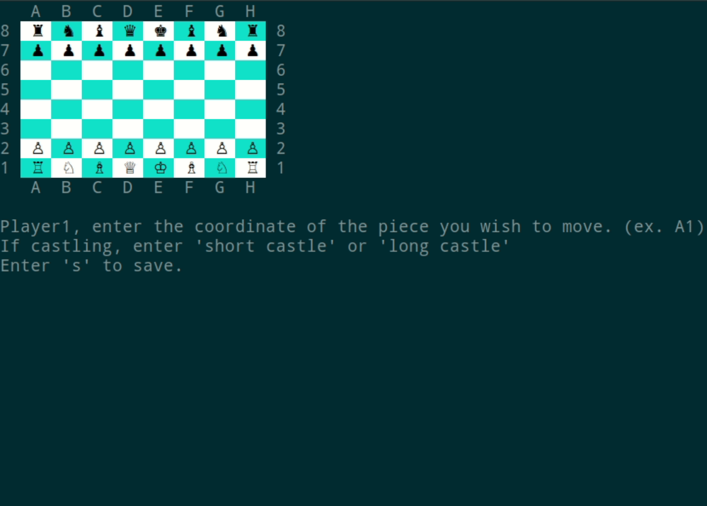
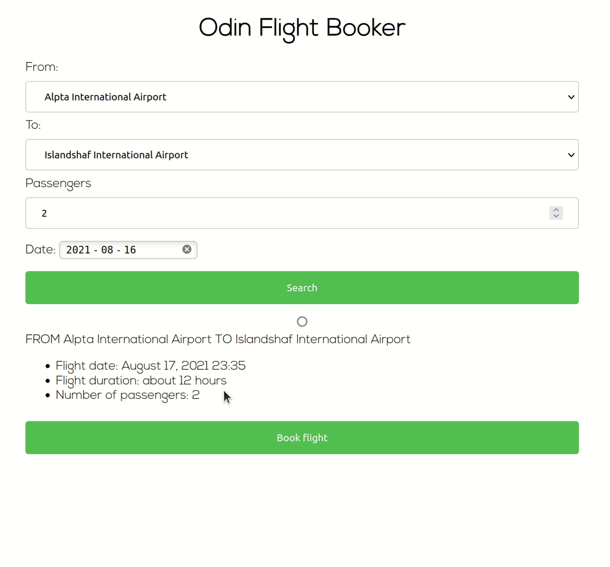
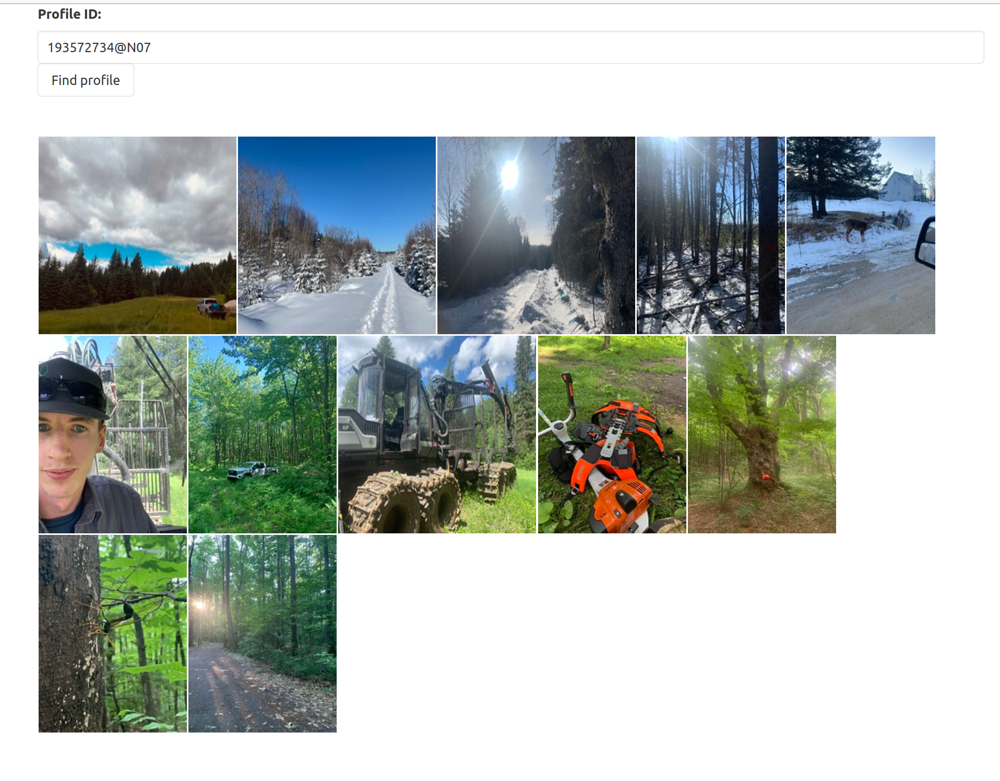
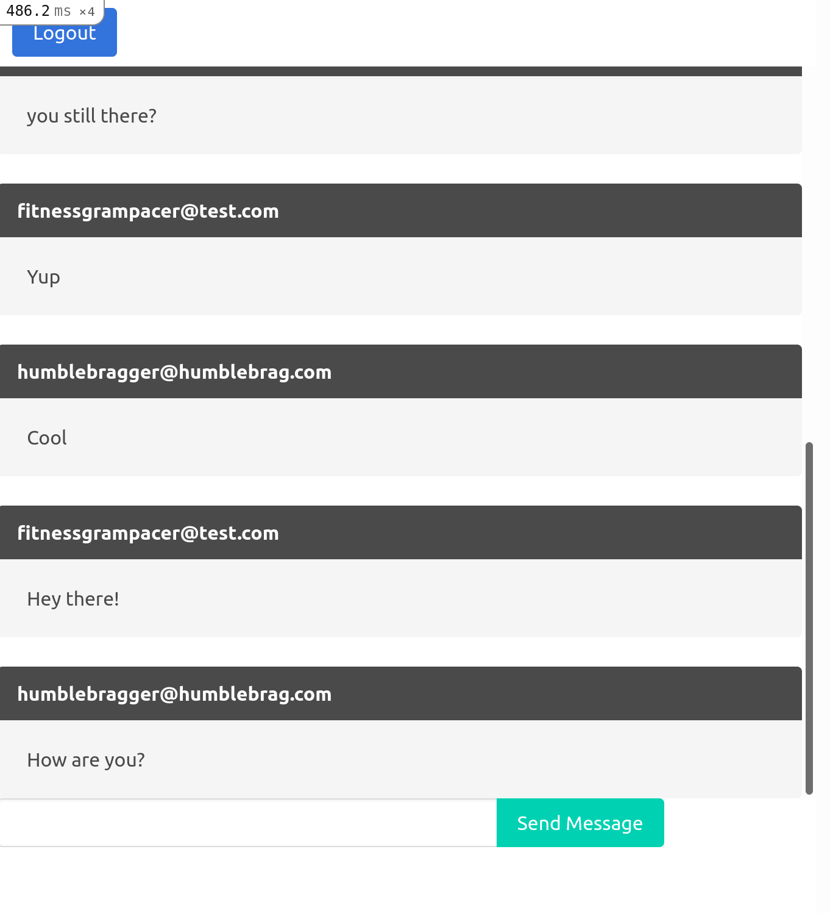
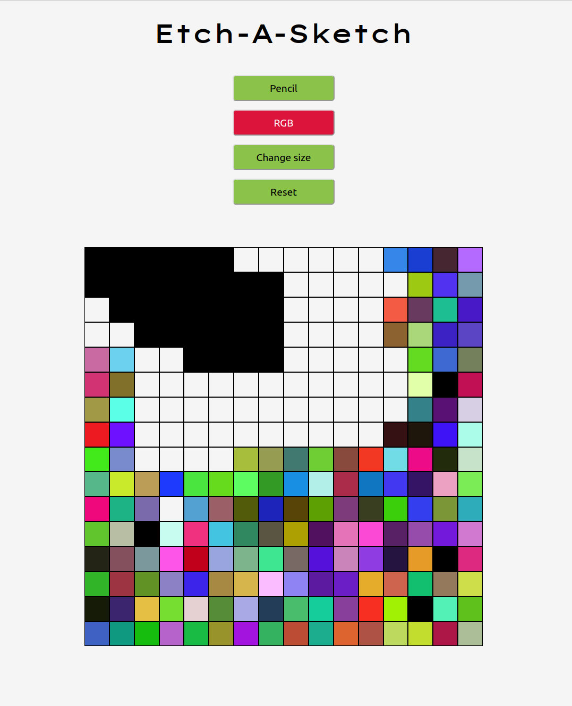

Nicholas Bérubé
Développeur Web
-
Jeux d'Échec
Jeu fait avec Ruby jouer dans la ligne de commande
- Batît selons les principes de la Programation Orientée Objet:
- Encapsulation: Rassembler la logique semblable dans de mêmes classes
- Abstraction: Connaître le moins possible des autres classes
- Héritance: Chaque type de pièce hérite de la même classe père nommée 'Piece'
- Polymorphisme: Chaque type de pièce peut agir comme la classe père 'Piece'
- Entièrement tester avec RSpec.
- Sauvegarder une partie grâce à la sérialization
 - Batît selons les principes de la Programation Orientée Objet:
-
Réservation de vol
Application qui permet de réserver un vol direct avec Ruby on Rails
- Intégration d'un centre de données PostgreSQL
- En utilisant Heroku Scheduler, deux tâches rake sont établit sur horaire pour continuellement créer de nouveaux vols
- Des tests sur les models, d'intégrations et de requêtes sont écrits avec RSpec
- Utilisation de Rails ActionMailer pour envoyer des courriels de confirmation lorsque un vol est réserver
 -
Clone de Facebook (en-cours)
Réseau Social fait avec Ruby on Rails
- Authentification des usagers avec Devise et Omniauth Facebook
- Les utilisateurs peuvent gérer leurs amis et leurs publications
- Les utilisateurs on accées à un fil d'actualité qui contient les publications de leurs amis
- Téléverser des images grâce à ActiveStorage

Mes Projets Favoris
 Github
Github
Voir içi pour plus de projets
À Propos
De Soldat à Forestier à Codeur
Bonjour,
Je suis un développeur web autodidacte qui cherche à mettre ses nouvelles compétences à l’épreuve. Après
avoir joué du violon pendant 8 ans, j’ai servi trois ans dans les forces Armées Canadiennes en tant que
soldat d’infanterie. C’était comme un grand séjour en camping. Au moins, c’est ce qu’ils m’ont dit. À la
fin de mon contrat, je me suis dit qu’un travail dans le bois serait parfait pour moi, alors j’ai étudié
un an pour devenir Forestier. Apparemment, aimer se balader en forêt la fin de semaine n’est pas pareil
que de marcher à travers des forêts sauvages pleines de maringouins et de mouches noires, avec la
rencontre occasionnelle d’un chevreuil ou d’un ours. Je croise mes doigts que ceux-ci ne se trouveront
pas dans mon prochain lieux de travail.
J’ai grandi dans une famille de sept enfants. J’ai fait mon primaire en Anglais et mon secondaire en
Français. Les deux langues ont été utilisées chez moi comme si elle n’en était qu’une. J’ai donc
confiance d’affirmer que je suis parfaitement bilingue en français et en anglais. J’ai grandi de façon
modeste et j’ai appris que travailler fort et être honnête mène loin dans la vie. À travers ma famille,
l’apprentissage d’un nouvel instrument et mes expériences professionnelles du passé, je me suis prouvé
que j’ai la détermination pour accomplir n'importe quelles tâches qui se dirigent vers moi.
Les premières fois où j’ai codé, j’ai immédiatement accroché. Les défis quotidiens et les opportunités à
en apprendre d’avantages sont infinis. Le sentiment de résoudre un problème qui durait depuis trop
longtemps est sans mot. La communauté virtuelle est incroyable. C’est un monde dont je tiens à faire
partie. J’ai la discipline, le leadership et les habilités à travailler en équipe pour accomplir le
travail demandé. À travers ces défis et aspirations, je croîs en avoir assez pour être un membre clé
d'une équipe.
Sincérement,
Nicholas Bérubé
Mes autres projets
-
Flickr stream
Intéragir avec l'API de Flickr
 -
Messager App
Introduction à Rails ActionCable
 -
Connect Four
Jouer à un jeux avec Ruby

-
Etch-a-Sketch
Planche à dessin virtuel fait avec JavaScript

 Linkedin
Linkedin